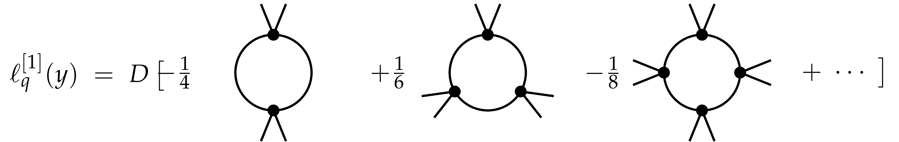
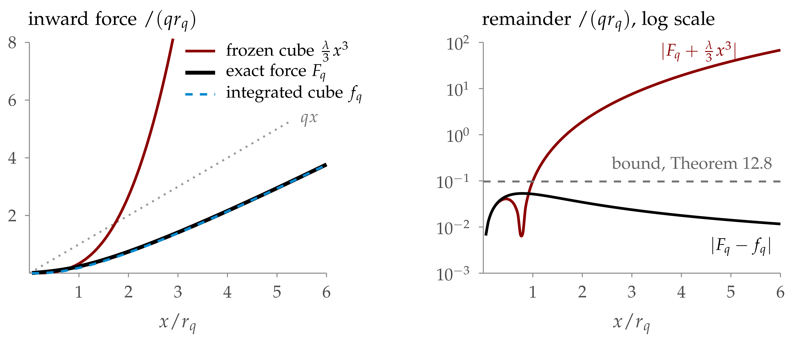

In the forecast coordinate \(\psi_t
=\mathbb{E}_t \Phi_T\) the forward equation has no drift and
the trees are integrated exactly; the backward half is the
force equation.
Lectures 6–7. Construct \(\Phi^4_3\)
on \(\mathbb{T}^3\) with this FBSDE:
deterministic renormalisation: an explicit
approximate force \(\bar{\mathcal{F}}_q\) and
its defect (today);
a priori estimates for the exact FBSDE in the
coordinates of \(\bar{\mathcal{F}}_q\),
uniform in the lattice (Lecture 7);
removing the cutoffs and identifying the limit
(Lecture 7).
Notes: Lectures 6–7 and the
Supplement; Bailleul–Chevyrev–G. (in prep.)
What is proved
For every coupling \(\lambda > 0\), every
reference mass \(q_0 > 0\) and every finite part
\(r\) of the counterterm, on a fixed torus, with
no smallness, and an explicit counterterm with arbitrary finite part:
the whole lattice sequence converges to a measure \(\nu\),
an explicit density over an explicit SDE;
the forecasts converge to the solution of an FBSDE from \(Y_{q_0} = 0\), driven by the limit of the lattice
innovations, and \(\psi_q = m_q (\Phi_q)\);
uniqueness in law for its scalar form, a variational formula with
no infinite constant, quartic tails, integration by parts.
Not proved: the vector FBSDE alone, strong solutions,
OS axioms in full, infinite volume.
Guiding principle. Do not estimate \(\Phi\)
and \(F\). Estimate the error of an explicit
approximate forecast.
The results of Lectures 6–7 are new: joint work with S.-J. Meyer
+ AI.
So \(D^2 U (y) = \lambda y^2\): the coupling is
the curvature, the same \(\lambda\) as in Lecture
4.
The Wick ordering is now part of \(\mu_N\).
Reference mass \(q_0 > 0\)
(constants \(\in \ker \Delta\) on the torus; \(r\) may be negative). Only \(q_0 +
\mu_N\) matters: fix \(q_0\), vary \(r\).
Main result, informal. Let
\(\displaystyle \mu_N = r - \lambda \text{Tr} C + \frac{2}{3}
\lambda^2 \int C^3 .\)
Then (a) \(\nu_N \to \nu\) in \(H^{-
s}\), \(s > \frac{1}{2}\), along the
whole sequence; (b) the forecasts converge in law to a solution of a
limiting FBSDE; (c) \(\nu\) has a variational
formula, an integration by parts formula and quartic tails.
These come from bounds on the error \(Z\) of an
approximate forecast, uniform in \(N\): UV
stability.
The Polchinski process as a filter
By Lecture 4, in the profile \(S_q = C_q\), \(\mathcal{R}_q = q - q_0\); at fixed \(N\)
everything is a theorem. The Polchinski process solves
One site, \(\nu \propto \mathrm{e}^{- \lambda \varphi^4 /
12} \mu^{1 / q_0}\), \(\lambda = 6\), \(q_0 = 1\). Left: one path of the observation \(\Phi_q\) and of the forecast \(\psi_q\),
both converging to the hidden \(\Phi_{\infty}\).
Right, over 200 paths: the forecast error \(\sim q^{- 1 /
2}\), the force term \(\psi_q - \Phi_q = C_q F_q
\sim q^{- 1}\), and the error \(Z_q\) of
the approximate forecast from \(\bar{\mathcal{F}} =
\frac{\lambda}{3} y^3\), below the bound \(2
C_{\ast} (\lambda / 3)^{1 / 2} q^{- 3 / 2}\) of Theorem 10.12
(see "Integrating the cube" below).
The exact force in the forecast coordinate
Since \(\Phi_q \mapsto \psi_q\) is invertible,
define \(\mathcal{F}_q\) by
and \(H^{\text{ex}}_q (y) = (K_q + D\mathcal{F}_q (y))^{-
1}\). It is the \(\mathcal{F}\) of Lecture
4 (\(x = \psi + S\mathcal{F} (\psi)\)), and \(F_q = -\mathcal{F}_q (\psi_q)\).
Itô on \(\Phi = \psi + C\mathcal{F}
(\psi)\). Its integrated form is Wetterich's equation, which we
do not need. An identity about the unknown \(\nu_N\),
not a construction.
Strategy: an approximate force \(\bar{\mathcal{F}}\)
gives approximate forecast coordinates; the error should be driven by
the failure of \(\bar{\mathcal{F}}\) to solve this
equation.
Proof: Itô on the coordinate equation, with the Polchinski
process and \(\mathrm{d} C_q = - C_q^2 \mathrm{d}
q\): the martingale part gives \(H\), the
drift gives \(HZ + b\).
Reading the system
\(Y\): forward and explicit once \(Z\)
is known; coefficients \(b, H\) built from
\(\bar{\mathcal{F}}\).
\(Z\): backward. The terminal condition \(qZ_q \to 0\) is proved at fixed
\(N\) (Lecture 7), because \(\bar{\mathcal{F}}_q
\to\) bare force.
The only source of \(Z\) is the drift \(b\), the force defect, transported by \(\exp
\int H\).
UV stability
The explicit force \(\bar{\mathcal{F}}\)
computes the forecast up to an error \(Z\) which
is small uniformly in \(N\).
Needed: (i) a defect integrable against the backward propagator
(renormalisation); (ii) global coercivity of \(\bar{\mathcal{F}}\) (large fields);
(iii) a priori estimates (Lecture 7).
The structure of the construction
\(J\): large-field
functional, \(E\): energy (both Lecture 7); \(b^{\text{b}}, b^{\text{l}}\): bounded- and large-field
parts of the drift.
Why not Polchinski with a frozen cube?
Programme: keep \(- \frac{\lambda}{3}
\varphi^3\) unclipped, clip the higher orders (result: \(f\)), pay in the source of \(R = F -
f\). Test it on one site: \(K_q = q\),
\(S = 1 / q\).
So \(3 R / (\lambda x^3) \to 1\): the remainder
cancels the cube (the dip: \(R\)
changes sign, Wick term below, cube above). Field equation: \(qx = (q - q_0) m_q + \omega_q\), only linear
confinement.
The price of clipping
\(f^c = f_1 +\mathcal{C}f_2\), with \(f_1
= - \frac{\lambda}{3} (x^3 + 3 Sx)\), \(f_2\)
the first tree, \(\kappa_q\) a smooth clip at
\(|x| \sim r_q\), \(\mathcal{C}f_2 =
\kappa_q \prime \cdot f_2 \circ \kappa_q\). For \(|x|
\geqslant 2 r_q\), the Burgers defect is exactly
In three dimensions \(a_2 (q)\) has continuum size
\(q^{- 1 / 2}\): its integral to infinity
diverges. At fixed lattice cutoff it is finite, but grows with \(N\).
This is the tadpole. Further insertions also
produce the logarithmic sunset. Keep the linear
flow in a running mass; iterate only the nonlinear remainder.
The projections \(\Pi\) and \(\Pi'\)
For a smooth odd force \(f\), and a
translation-invariant operator \(L = \langle L \rangle I
+ L^{\circ}\) (constant mode plus centred part):
\(\displaystyle (\Pi f) (y) = f (y) -\operatorname{Df} (0) y, \qquad
(\Pi' f) (y) = f (y) -
\langle \operatorname{Df}(0) \rangle y.\)
\(\Pi f\) starts at cubic
order; \(\Pi' f = \Pi f +
(\operatorname{Df}(0))^{\circ} y\) removes only the
scalar part of the linear jet.
The divergences (tadpole, sunset) are constant
modes. The centred part of the linear flow is integrable
at infinity.
\(\ell\) and the centred kernel \(\Theta\):
integrate from \(\infty\), by the same finite
iteration. Scalar mass \(\mu\): solve exactly,
fixed at an auxiliary large scale \(q_{\ast}\)
(with \(g_{q_{\ast}}\) small).
Root one leg of a closed loop and follow the loop: two of its
propagators are estimated in \(L^2\) (this gives
the bubble \(a_2 (q)\)), all the others in
operator norm (each \(q^{- 1}\)).
Loop estimate
A closed loop with \(p\) vertices:
\(\displaystyle s (\text{loop}) \leqslant Ca_2 (q) \hspace{0.17em}
q^{- (p - 1)} \prod_i s
(T_i)\)
(two propagators in \(L^2\), the others in
operator norm). After the \(q\) integration a
one-loop term is of size \(g_q qr_q^{2 - k}\);
every further loop gains a factor \(g_q\).
\(\displaystyle - \lambda^2 y (x) \int C_q (x, z)^2 y (z)^2 \mathrm{d}
z.\)
Four-leg size: \(\textsf{S}_4 (\ell^{[1]}_q) \lesssim
\lambda^2 q^{- 1 / 2} = \lambda g_q\). This is the seed \(\ell^{[1]}\): the superscript counts loops.
The seed in graphs

The seed as one-loop graphs: lines \(C_q\), a
vertex \(\lambda y^2\) with its two external
fields at each corner. The \(j\)-th ring has \(2 j\) legs and coefficient \((- 1)^{j +
1} / (2 j)\); \(D\) marks one leg, giving
the force. The series sums to a logarithm, with radius of convergence
\(r_q\). The quartic ring is the bubble.
Splitting the flow and deriving the iteration
For \(\mathcal{F}= U\prime + My + \ell\), the loop
map
Fix a trial scalar path \(\mu\)
(determined at the end as a fixed point, "Closing the mass
path"). Level masses \(M^{[j]} = \mu I +
\Theta^{[j]}\), sources \(\mathfrak{S}^{[j]} =
D\mathcal{T} [M^{[j]}, \ell^{[j]}] (0)\), zero-field response
\(R^{[j]}_{0, q} = (K_q + M^{[j]}_q)^{- 1}\):
With \(\ell^{[0]} = 0\), \(M^{[0]} =
0\), the case \(j = 0\) is the seed step
without mass, \(\partial_q \ell^{[1]} = \Pi \mathcal{T}
[0, 0]\), and \(\Theta^{[1]} = 0\) (the
tadpole is local). Output: \((\ell^{[3]}, \Theta^{[3]})
[\mu]\).
Centre before taking absolute values
A centred kernel \(\Theta (z) = \Theta (0, z)\) is
measured by its first moment \(v_1 (\Theta) = \int d (0,
z) | \Theta (z) | \mathrm{d} z\), \(d\) the
torus distance. For an even kernel, \(\Theta \mathbb{1} =
0\) means that the diagonal cancels the off-diagonal mass. With
\((\sigma_z f) (x) = f (x + z)\), \(\delta_z^2
= \sigma_z + \sigma_{- z} - 2 I\),
The row norm diverges as \(h \to 0\); the first
moment stays bounded.
Estimate the signed product \(C_q \Theta\)
first. The quantity needed by the loop is the kernel after resolvent
smoothing, not the absolute mass of \(\Theta\)
itself.
Smoothing turns cancellation into a moment bound
The resolvent smooths on length scale \(q^{- 1 /
2}\):
Holding the nonlinear correction fixed, \(\delta R = - R
\delta M \hat{R}\) (\(\hat{R}\) the
response at mass \(M - \delta M\)) has row norm
\(\lesssim \rho_q / q\) and row \(L^2\)
norm \(\sup_x \| \delta R (x, \cdot)\|_{L^2}\)
\(\lesssim \rho_q \sqrt{a_2 (q)}\).
A marked propagator gains the relative factor \(\rho_q\):
for \(\Theta^{[2]}\) in the second correction,
\(\rho_q \lesssim g_q^2\); for two scalar paths,
see "Mass differences" below.
Centring the source removes local terms
Separate the source at level \(j\) into tadpole
and correction vertex:
Centring removes the local obstruction. The remaining spatial
estimate must come from the first moment of the nonlinear vertex.
The iteration produces the first-moment bound
Four-leg vertex \(T^{[j]}_q\) of \(\ell^{[j]}\),
proved below level by level (\(\Theta^{[2]}\)
needs only the bubble \(T^{[1]}\), \(\Theta^{[3]}\)
only \(T^{[2]}\), at \(M^{[1]} = \mu
I\)):
\(\displaystyle v_1 (\Theta^{[j + 1]}_q) \leqslant \int_q^{\infty}
v_1
((\mathfrak{S}^{[j]}_s)^{\circ}) \mathrm{d} s \leqslant C
\lambda^2 q^{- 1 /
2} .\)
Uniformly in \(N\): \(\eta_q
(\Theta^{[2]}) \lesssim g_q^2\), and one more \(g\)
for the difference, \(\eta_q (\Theta^{[3]} -
\Theta^{[2]}) \lesssim g_q^3\), with \(\eta_q
(\Theta) = q^{- 1 / 2} v_1 (\Theta)\).
First correction: insert the seed
Set \(R^{[j]} = (K + M^{[j]} +\operatorname{DU}\prime + D
\ell^{[j]})^{- 1}\) and \(\delta^{[2]} =
\ell^{[2]} - \ell^{[1]}\). Subtract the bare loop from the loop
containing the seed:
Four-leg sizes: seed \(\lambda g_q\), first
correction \(\lambda g_q^2\), second correction
\(\lambda g_q^3\).
For squared propagators use \(A^2 - B^2 = A
(A - B) + (A - B) B\); no commutativity is assumed.
Following a spatial distance through a loop
At zero field, set \(W_q (T) = s (T) + \sqrt{q} v_1
(T)\). Mark two external legs and follow their distance around
the loop.
A displacement inside a vertex is controlled by that vertex's
first moment.
A displacement along a propagator is controlled by its weighted
\(L^1\) or \(L^2\) bound.
The triangle inequality distributes the external distance over
these pieces.
The weight \(\sqrt{q}\) makes a distance of
order \(q^{- 1 / 2}\) dimensionless: the
weighted loop has the same scale powers as the unweighted loop.
Keep within-vertex moments: smoothing the propagators
cannot supply spatial localisation for an arbitrary nonlocal
vertex.
Integrating preserves the moment weight
A loop difference with relative size \(\varepsilon_s\)
has a marked vertex or propagator. With \(\delta
\mathcal{T}_s =\mathcal{T}_s [M, \ell] -\mathcal{T}_s [M,
\hat{\ell}]\), the weighted comparison gives
For \(s \geqslant q\), \(\sqrt{q}
\leqslant \sqrt{s}\):
\(\displaystyle W_q \left( \int_q^{\infty} A_s \mathrm{d} s \right)
\leqslant \int_q^{\infty}
(s (A_s) + \sqrt{q} v_1 (A_s)) \mathrm{d} s
\leqslant \int_q^{\infty} W_s
(A_s) \mathrm{d} s.\)
First correction: \(\varepsilon_s \lesssim
g_s\). Second correction: \(\varepsilon_s
\lesssim g_s^2\).
\(\Pi\) subtracts only a linear force, so it
leaves all \(k \geqslant 4\) vertices unchanged.
The field supremum also propagates, since \(\mathcal{B}_q
\subseteq \mathcal{B}_s\).
The four-leg moment after two corrections
Write \(T^{[j]}_q = \mathrm{D}^3 \ell^{[j]}_q
(0)\). The seed is the bubble:
The \(10 \to 8 \to 6\) leg budget
supplies the higher vertices needed by both comparisons. Thus \(v_1 (T^{[j]}_q) \lesssim \lambda^2 q^{- 1}\).
The mass
Impose the scalar part of the linear flow for the
final approximation \(M = M^{[3]} = \mu I +
\Theta^{[3]}\), with \(R^{[3]}_{0, q} = (K_q +
M_q)^{- 1}\):
with \(\mu_{q_{\ast}} = b_{\ast}\), \(|b_{\ast}
| \leqslant B_0 \lambda q_{\ast}^{1 / 2}\), at an
auxiliary scale \(q_{\ast}\). The
centred part of \(\mathfrak{S}^{[3]}\) is not
imposed. Bare mass \(\mu_N = \text{lim}_{q \to \infty}
\mu_q\): an output of the flow. \(\beta\)
depends on the whole path \(\mu\) through \(\ell^{[3]} [\mu]\): a fixed point ("Closing the
mass path").
The mass is the fixed point \(\mu
=\mathcal{A} [\mu]\): a scalar function of \(q\),
not an operator-valued path. It is the only fixed point we solve;
the centred kernels are explicit outputs of two Picard steps.
This is an equation for the whole path: the corrections and centred
kernels at \(q\) depend on \(\mu\)
at later scales.
What the fixed point gives
For \(q_{\ast}\) large, uniformly in \(N\):
a unique scalar path in the ball \(\| \mu \|_{\ast}
\leqslant R\) (norm on the next slide), so \(|
\mu_q | \lesssim \lambda q^{1 / 2}\);
Explicit counterterm. \(\mu_N = r -
\lambda \text{Tr} C + \frac{2}{3} \lambda^2 \int C^3\) is
reached by a unique boundary value \(b_{\ast,
N}\), and \(b_{\ast, N}\) converges as
\(N \to \infty\). The measure does not depend on
\(q_{\ast}\).
Two distinct iterations
Inner recursion: for each trial scalar path \(\mu\), start from the seed and compute exactly two
steps.
Every outer step recomputes the same two-level force. Its depth
stays \(2\), so no additional field derivatives
are consumed. At the fixed point the scalar linear flow is exact;
the defect, nonlinear and centred linear, remains.
Mass differences gain a small insertion
Compare two scalar paths with the same \(b_{\ast}\),
\(d = \| \mu - \hat{\mu} \|_{\ast}\); \(\delta\)
denotes output differences, \(\delta M^{[j]} = \delta \mu
I + \delta \Theta^{[j]}\).
the latter by integrating the differences of the centred sources from
infinity. Loop comparisons through the two levels give \(\mathcal{N}_{k,
q} (\delta \ell^{[j]}) \lesssim g_q^2 qr_q^{2 - k} d\), \(j = 2, 3\), \(4 \leqslant k \leqslant 12
- 2 j\) (the seed does not depend on \(\mu\)).
A \(k\)-leg force vertex has \(k - 1\) field derivatives. The mass source uses only
the four-leg vertex of \(\ell^{[3]}\), the centred
sources those of \(\ell^{[1]}\), \(\ell^{[2]}\).
A path difference inserts \(\delta M^{[j]}\)
in a resolvent. It is field-independent: \(D_y \delta
M^{[j]} = 0\). The comparison uses the same
field-derivative ranges as the construction.
\(\mathcal{A}\) returns a scalar
path. At the next outer step, restart from the original
seed and perform the same two steps. We do not use the previous
\(\ell^{[3]}\) as a new seed.
The outer iteration contracts in one fixed space of scalar paths.
The finite Lipschitz estimates transfer convergence to the
corrections; their derivative budget does not shrink with the outer
index.
Two mass renormalisations
The two divergent self-energies of Appendix A.2 of Lecture 5:
Sunset: contracting the bubble in \(D^3
\ell^{[3]} (0)\) with \(R_0^2\) and
integrating gives the two-loop self-energy,
\(\displaystyle \frac{2}{3} \lambda^2 \int C^3 \approx
\frac{\lambda^2}{24 \pi^2} \log N
\quad (= 2 \gamma_T \text{ of
Lecture 5}) .\)
Power counting: nothing else. In the flow: the integrals from \(q = \infty\) of all vertices with \(k
\geqslant 4\) legs converge; only the constant mode of the
linear jet needs a boundary condition at a finite scale.
\(\mu_q\) at fixed \(q\) has a
limit as \(N \to \infty\); \(\mu_N\)
does not. Never interchange the two limits.
The two mass renormalisations in graphs

The cross is \(\partial_q K_q =
1\), as before; with the two lines through it, it gives \((R^{[3]}_{0, q})^2\). The bubble in \(D^3
\ell^{[3]} (0)\) produces the sunset.
The flow at large
fields
Lecture 6
The large-field problem
All bounds hold on \(\mathcal{B}_q\) only. The
free field exceeds \(r_q\) with small, nonzero
probability, and nothing a priori controls the interacting forecast.
We need \(\bar{\mathcal{F}}_q\) defined and
uniformly coercive for all fields.
Its power series has radius exactly \(r_q\)
(singularities at \(\pm \mathrm{i} r_q\)). Half
of the truncations destroy monotonicity. The exact function is
harmless, \({| \ell^{[1]}_q}' | \leqslant \frac{9}{8}
\lambda / q\).
Perturbative control for \(|y| \lesssim r_q\);
outside, a non-perturbative replacement that keeps the structure the
estimates use: coercivity, carried by the bare cube.
One site: \(qy + \frac{\lambda}{3} y^3 = q
\Phi_q\), noise coefficient \(H_q (y) = (q +
\lambda y^2)^{- 1} \leqslant q^{- 1} \wedge (\lambda y^2)^{-
1}\). Large fields are more elliptic and less noisy.
The cubic and linear parts are not clipped, and \(D
\kappa_q\) keeps the force a gradient. Globally: \(s
(D^{j - 1} \tilde{\ell}_q) \leqslant Cg_q qr_q^{2 - j}\) (\(j = 2, 3, 4\)), \(s (D \partial_q
\tilde{\ell}_q) \leqslant Cg_q\).
Global coercivity
For all \(y\): \(c (K_q + \lambda
y^2) \leqslant H_q (y)^{- 1} \leqslant C (K_q + \lambda
y^2)\),
Sources of \(b^{\text{l}}\) (four groups): the
mass term \(M' y - JM' \kappa y\) (\(J
= D \kappa\), \(M' = \partial_q M\); linear
part unclipped, flow computed at \(\kappa y\));
the motion of the clip; cubic vertex at \(y\) vs
correction at \(\kappa y\); chain-rule terms with
\(\kappa'', \kappa'''\). All vanish if \(\|y\|_{\infty} \leqslant r_q\).
The point
\(b^{\text{l}}\) is as large as the whole drift,
but supported on large fields. It is controlled by
how often the actual dynamics visits them: \(\int q^{-
3 / 2} \lambda \|t_q (Y_q)\|_6^6 \hspace{0.17em} \mathrm{d}
q\) (Lecture 7).
The coordinate equation
With \(U' = \frac{\lambda}{3} y^3\), up to
a small Lipschitz perturbation, the forecast solves the cubic elliptic
equation driven by the field at resolution \(q\):
The expansion needs \(g_q\) small, so \(\bar{\mathcal{F}}_q\)
is built for \(q \geqslant q_{\ast}\). Below \(q_{\ast}\) nothing needs constructing: freeze it,
Then \(K_q + D \bar{\mathcal{F}}_q = K_{q_{\ast}} + D
\bar{\mathcal{F}}_{q_{\ast}}\): coercivity is automatic, \(H_q = H_{q_{\ast}}\), and \(y_q (x) =
y_{q_{\ast}} (C_{q_{\ast}} K_q x)\).
The defect is explicit: \(\mathcal{D}_s (y) = - y +
\frac{1}{2} \text{Ctr}_{H_{q_{\ast}}^2}
D^2
\bar{\mathcal{F}}_{q_{\ast}} (y)\), with \(\|\mathcal{D}_s
(y)\|_p \leqslant C \|y\|_p\).
So the system holds on \([q_0, \infty)\) with
\(Y_{q_0} = 0\): the initial value is
deterministic, with no large mass. \(q_{\ast}\)
stays only in the proofs, where the expansion and the closure of the
loop need \(g_q\) small.
Summary of today
At every lattice:
\(\mu_N\), \(M_q\) and a
globally coercive \(\bar{\mathcal{F}}_q\), all
deterministic;
the exact FBSDE for \((Y, Z)\);
a source whose bounded-field part is integrable (two steps), and
whose large-field part is controlled by sixth powers of \(Y\) on large fields.